Why Tile Edging?
Having your tiles edged eliminates the need for additional finishing products and creates a clean, polished finish.
CUSTOM TILE PROFILING
Precision tile edging for pool coping, stair nosing, aprons and architectural finishes across the Gold Coast.
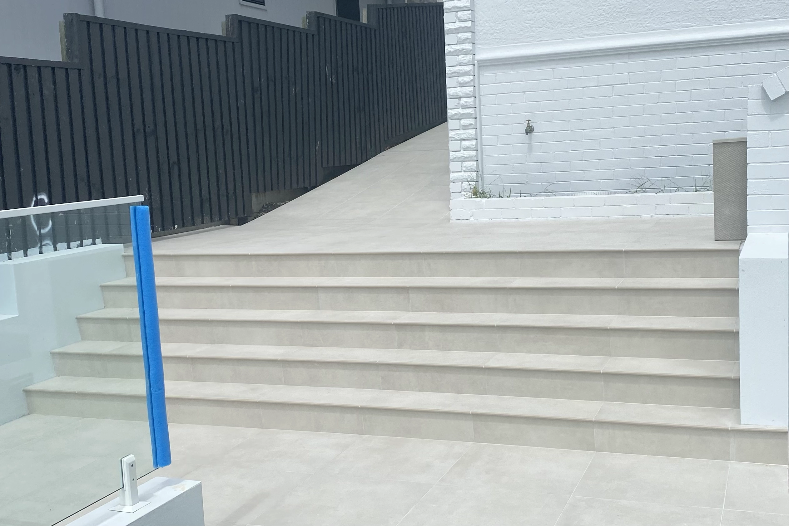
THE STILE EDGE DIFFERENCE
We take your tiles and profile the edge to create beautiful pool coping, stair nosing, skirting and border tiles — the perfect finishing touch to your tiling project.
Having your tiles edged eliminates the need for additional finishing products and creates a clean, polished finish.
Most flooring tiles can be edge profiled, including full-bodied porcelain, glazed porcelain, double-loaded ceramic and natural stone.
STANDARD PROFILES
We machine the edge of your tile into a finished profile for pool coping, stair nosing, skirting, patios, balconies and more.
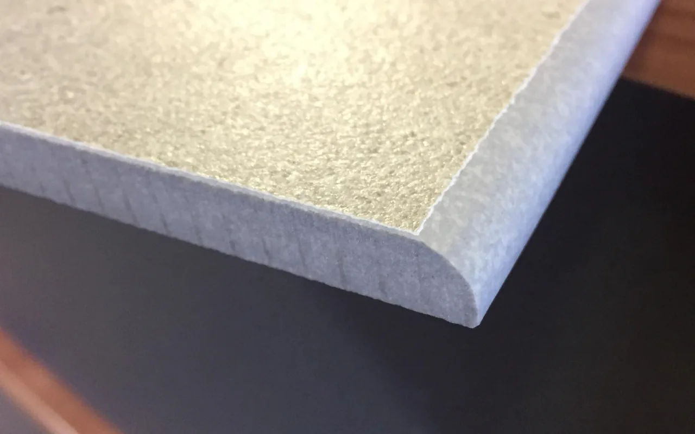
MOST POPULAR
Economical and quick to manufacture, it is by far our most popular edging. This simple round edge profile is perfect for stair nosing, skirting tiles and pool edging.
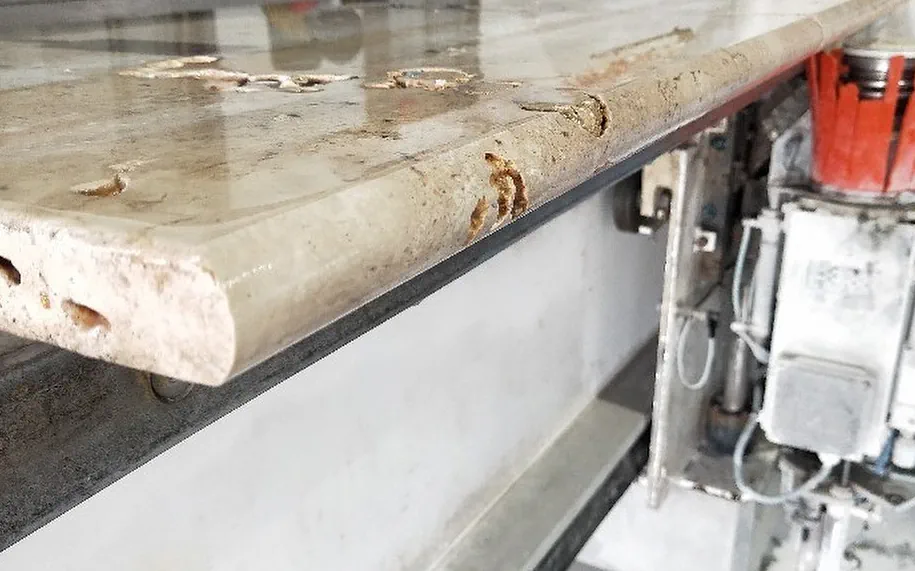
ROUNDED
A fully rounded edge that softens the tile profile and creates a small overhang. A simple, understated option for pool coping and other exposed edges.
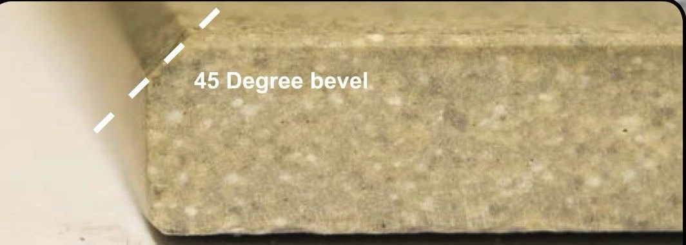
CONTEMPORARY
A clean squared profile with a bevelled edge, ideal for contemporary pool surrounds and architectural finishes.
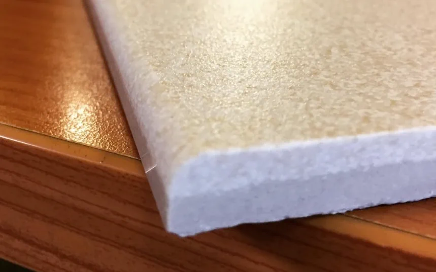
SUBTLE FINISH
A simple contemporary profile that softens exposed tile edges while maintaining a restrained finish.
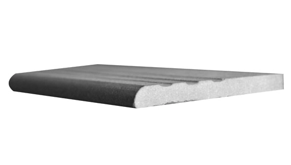
STAIR TREAD
Machined grooves are cut directly into the tile to create an integrated non-slip tread without the need for a separate nosing product.
LAMINATE PROFILES
Laminated profiles combine two pieces of tile or stone to create a thicker finished edge. This type of join has more structural integrity, providing a strong practical alternative to a mitred join.
Explore laminate profiles →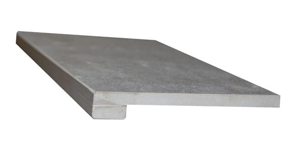
APRON PROFILES
We can profile your tile into a deeper finished edge for pool coping, stair nosing, skirting and other exposed edges.
Choose from a precision mitred finish or a laminated apron construction with a rounded or bevelled face.
View all apron profiles ↗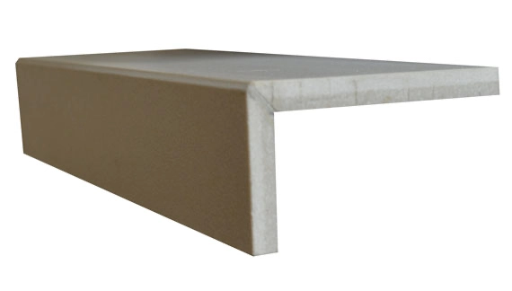
PRECISION JOINT
Our mitred edges provide a clean, accurate finish where two tiled surfaces meet at a right angle. Each piece is machined to a 45° angle for a precise, consistent joint.
Pre-machined mitres save tradespeople the time and hassle of cutting and finishing each edge on site.
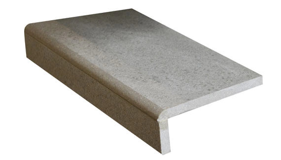
02ROUNDED
A deeper rounded edge created with a matching tile strip for a fuller, more substantial edge for pool coping.
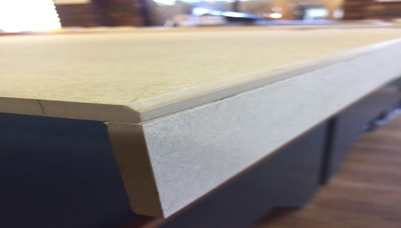
03CONTEMPORARY
A squared architectural edge with a bevelled face, designed for a clean contemporary coping finish.
APRON CONSTRUCTION
Round Edge and Flat Edge Bevel apron profiles can use a matching tile strip to create greater depth at the finished edge.
Apron strips are typically available in the 30-90 mm range, depending on the application and desired finish.
Discuss your project ↗NOT SURE WHICH PROFILE?
OUR WORK
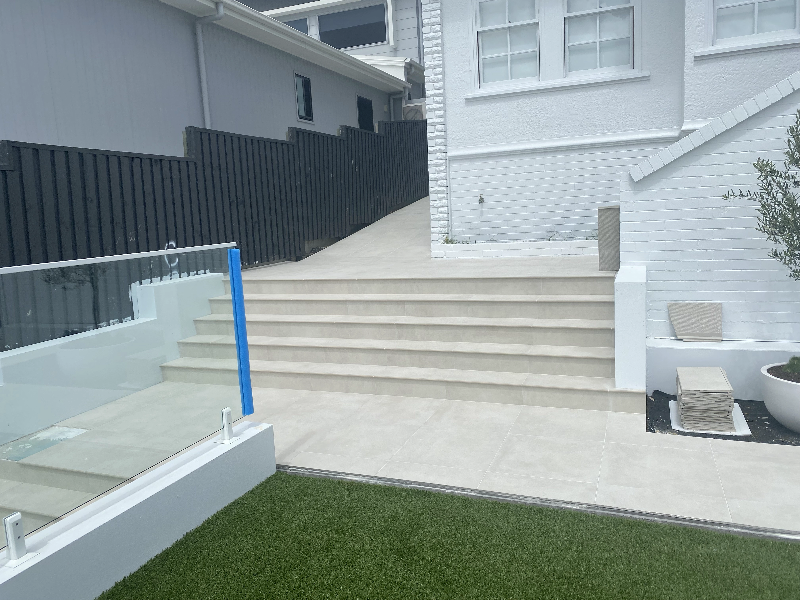


READY TO GET STARTED?